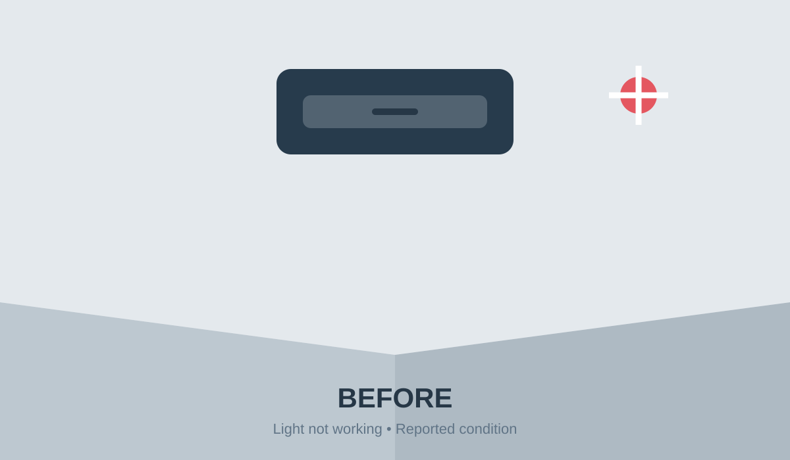

Issue detail
⌕ Search issues, rooms, people
＋ Report issue
Issue board › FT-4248 › Updated just now
High priority In progress Assigned
Broken corridor light
Maple Hostel • Floor 3 • West corridor
Issue overviewReport details


The ceiling light flickers most nights and has stopped lighting up the corridor. It is hard to see after 7 PM, especially near Stairwell B.
CategoryElectrical
UrgencyHigh
ImpactHigh
✓
Reported✓
Assigned3
In progress4
VerifyUpdates & notes4 comments
RK
Ravi Kumar
Technician • 22 min ago
Checked the ballast and found a loose connection. Replacing the LED driver and testing the fitting.
Please check the light near the west corridor. It gets very dark after 7 PM.